Remote Sensing & Image Analysis
LiDAR · OBIA · Multispectral · Stereo
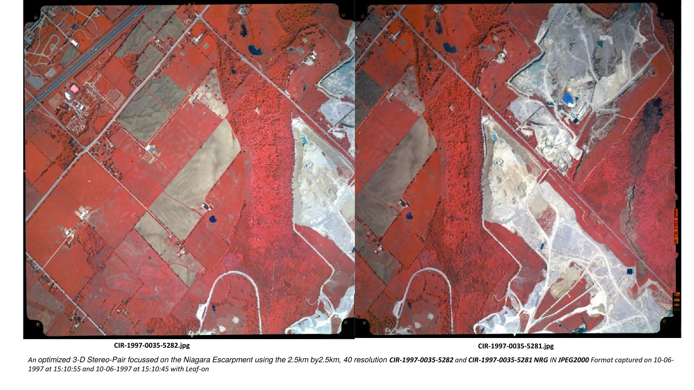
3D Stereo Pair — Niagara Escarpment
CIR-1997-0035-5282 and CIR-1997-0035-5281 NRG imagery. 2.5km × 2.5km, 40 resolution, leaf-on.
Stereo Interpretation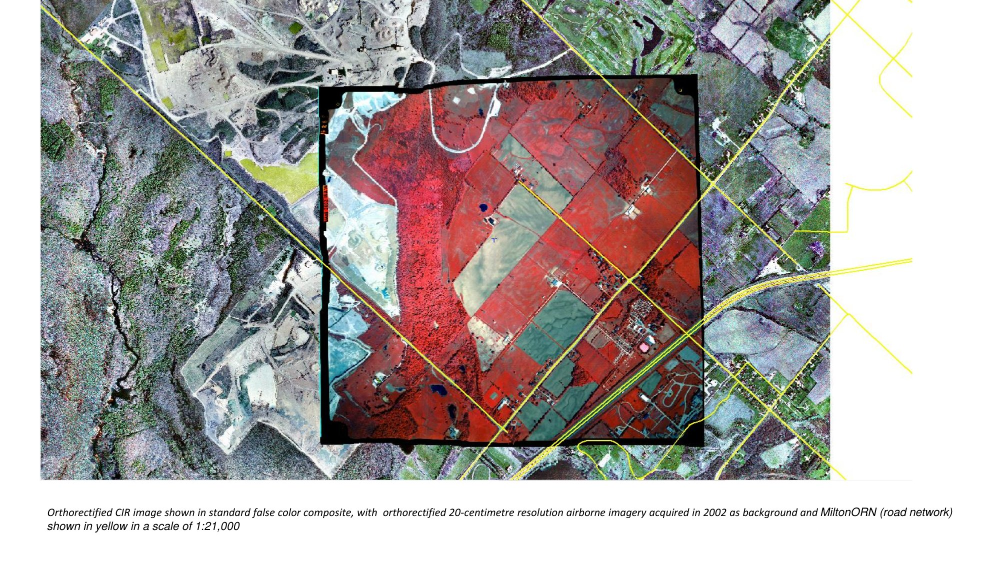
CIR False Colour Composite
Orthorectified CIR with 20cm airborne imagery background and MiltonORN road overlay at 1:21,000.
Orthorectification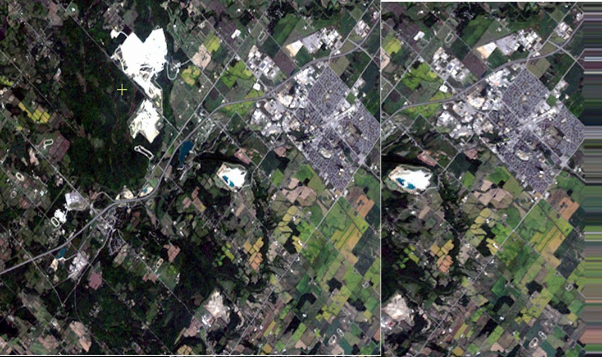
Orthorectification Before & After
Geometric correction removing terrain displacement and tilt errors using ground control points.
Geometric Correction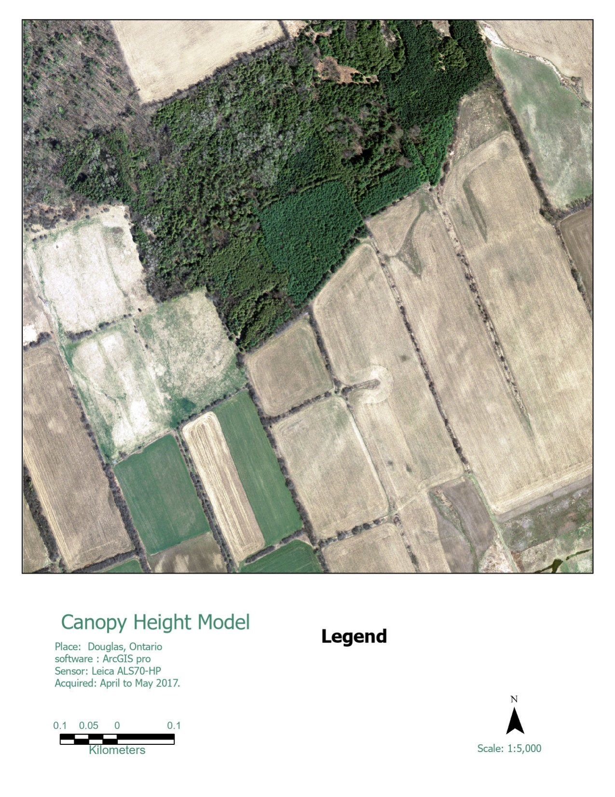
LiDAR DTM / DSM / Point Cloud
Ontario classified point cloud — Douglas, ON. April–May 2013, Leica ALS70-HP sensor.
LiDAR Processing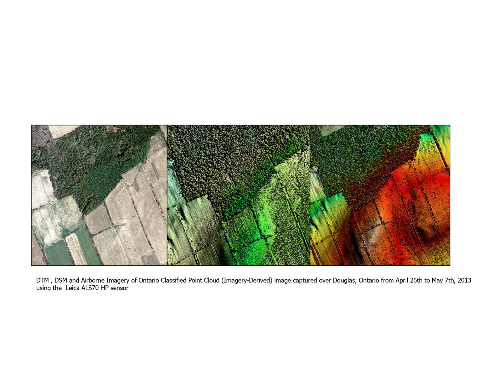
Canopy Height Model — Douglas, Ontario
CHM at 1:5,000 scale. LiDAR acquired April–May 2017, Leica ALS70-HP, ArcGIS Pro.
CHM · LiDAR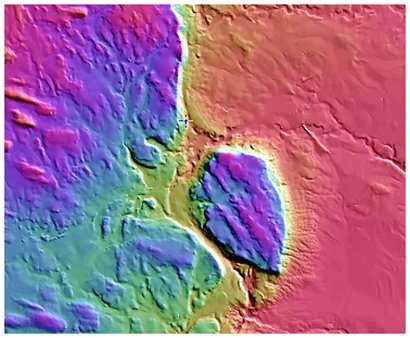
DEM Coloured Relief — Purple Ramp
Hypsometric tinting highlighting terrain morphology and elevation variation across the study area.
DEM · Terrain Analysis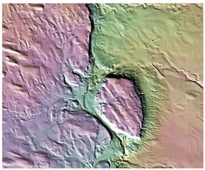
DEM Coloured Relief — Green Ramp
Alternative hypsometric rendering demonstrating different terrain visualisation approaches.
DEM · Visualisation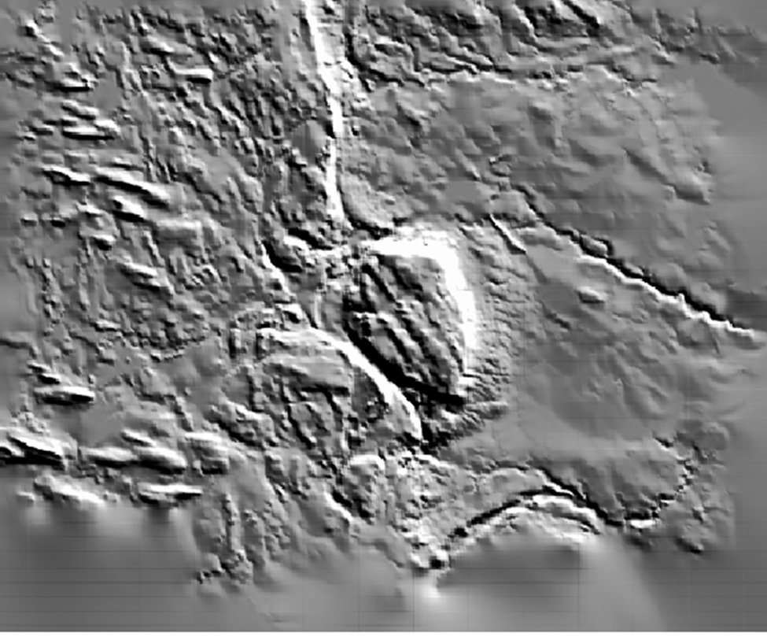
DEM Shaded Relief — Greyscale
Hillshade emphasising micro-topographic features, ridgelines and drainage patterns.
Hillshade · DEM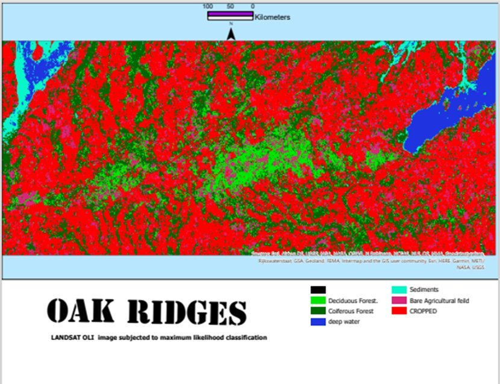
Oak Ridges Moraine — Max Likelihood
Landsat OLI — deciduous forest, coniferous, water, sediments, bare agricultural, cropped.
MLC · Landsat OLI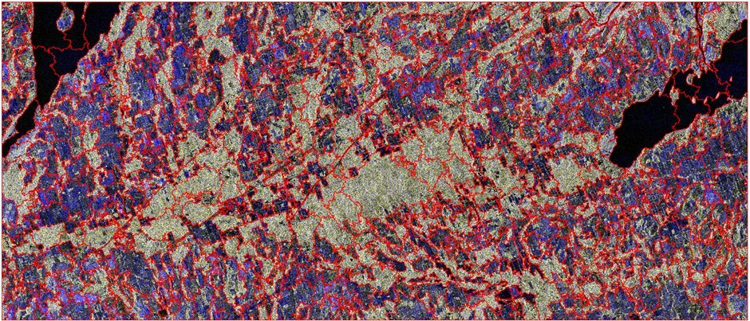
PCI Object Analyst — ML Classification
OBIA using PCI Geomatica. Objects classified by spectral and spatial properties using ML.
OBIA · PCI Geomatica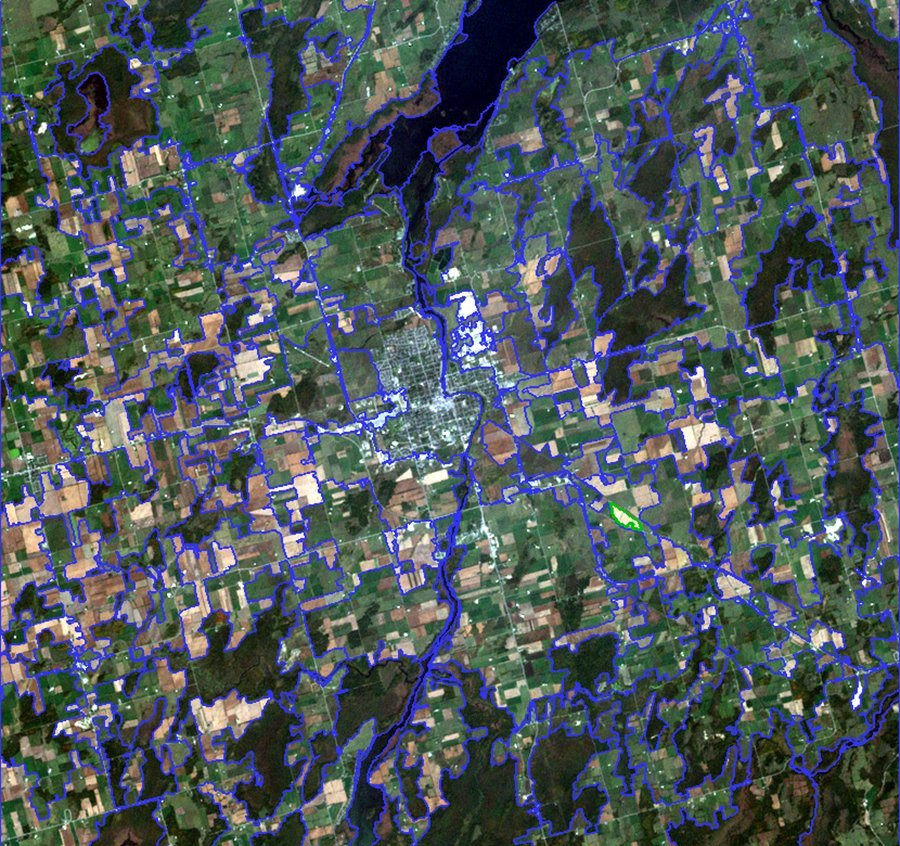
eCognition Segmentation — Scale 80
Multiresolution segmentation at scale parameter 80 prior to object classification in eCognition.
eCognition · OBIA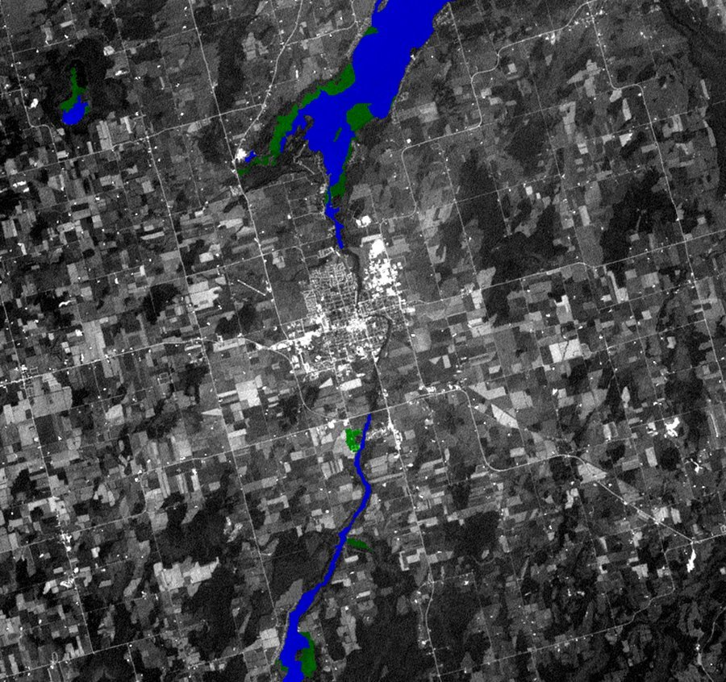
eCognition Water & Wetland
Blue = open water, green = wetland/riparian vegetation classified using eCognition Essentials.
eCognition · Wetland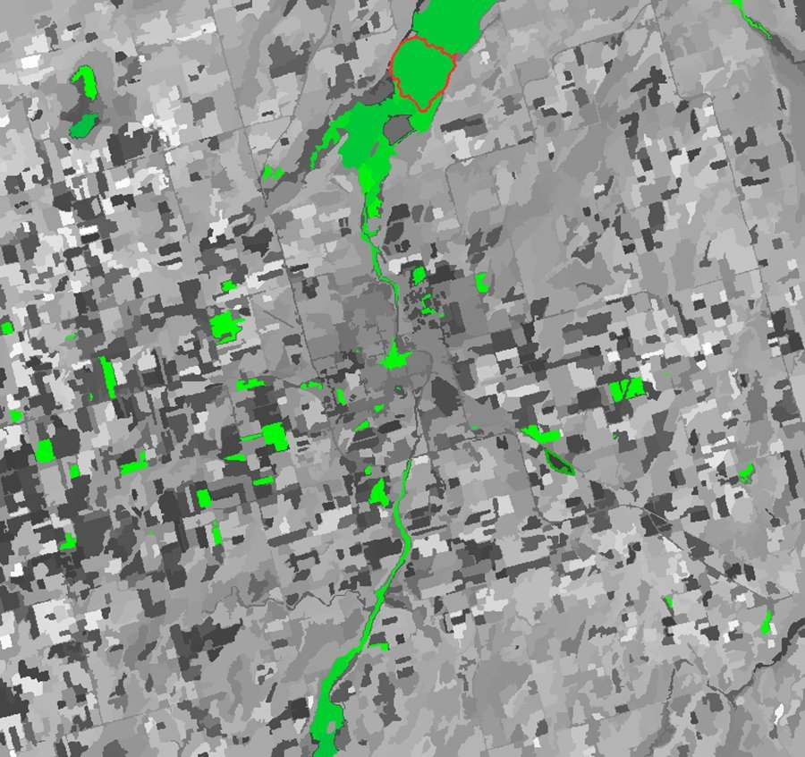
NDVI Wetland Detection
NDVI threshold in eCognition identifying wetland and riparian vegetation zones from above threshold.
NDVI · Wetland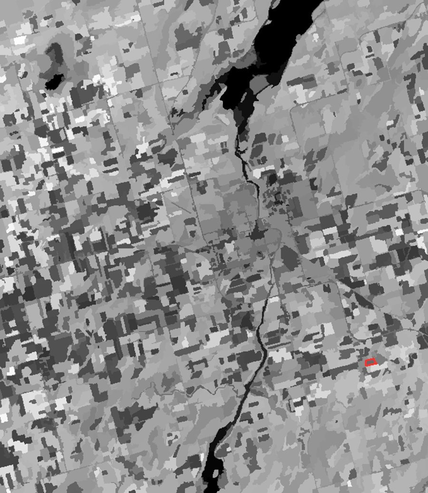
NDVI Greyscale Surface
Vegetation density gradient — dark = low NDVI (bare/urban), light = high vegetation density.
NDVI · Vegetation Index